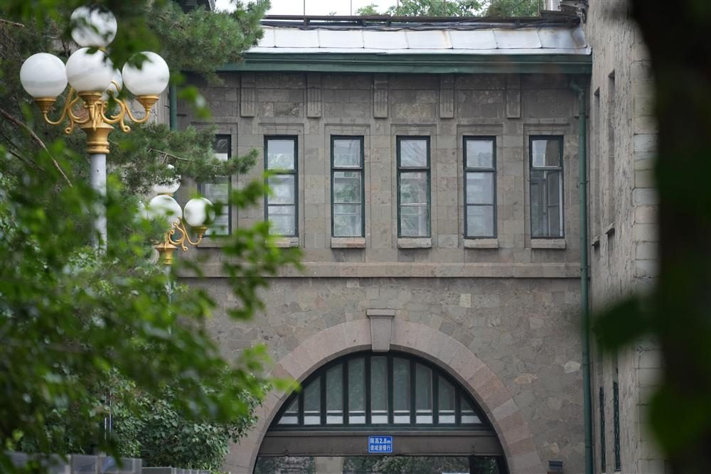
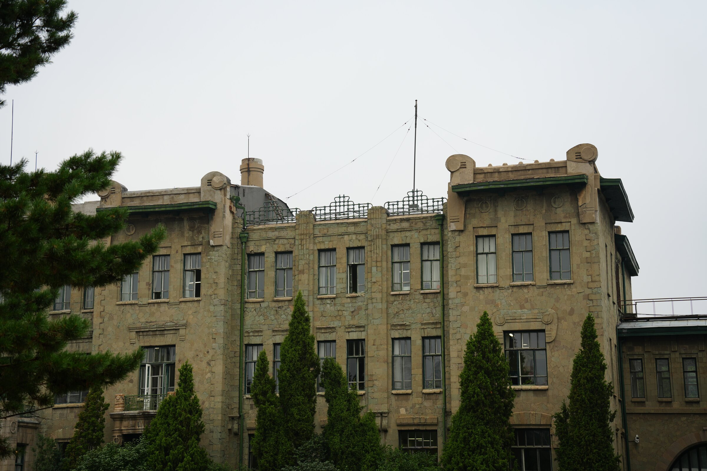

哈尔滨新艺术建筑｜Art Nouveau architecture in Harbin
Chapter 5
中东铁路管理局旧址
2026年7月25日
原中东铁路管理局建于1902年4月，1904年2月竣工，位于南岗区西大直街 51 号，建筑主体三层，局部两层，砖木混合结构，是现存规模最大的新艺术建筑，被人们称为“大石头房子”设计师为奥勃洛米耶夫斯基。1905年，该建筑因多次火灾损毁四分之三，1906年以钢筋混凝土结构重建并使用石材贴面，重建后为俄罗斯式石建筑，建筑面积2.33万平方米，现为中国铁路哈尔滨局集团有限公司办公地。
哈尔滨人叫它”大石头房子”。 中东铁路管理局旧址位于南岗区西大直街51号，1902年始建，1904年落成，由俄国建筑师沃勃罗米耶夫斯基设计（方案在圣彼得堡设计竞赛中获头奖）。1905年遭大火烧毁四分之三后，1906年以钢筋混凝土结构重建，外墙以精制加工的青石板（暗绿色花岗岩）贴面——施工时先将石块在沙地上排列编号再贴于墙面，工艺极为考究。建筑平面呈俄文字母”Ж”形（俄语”铁路”首字母），由6栋相对独立的楼房通过过街楼连接，围合成”日”字形群体，正楼三层、配楼二层，总建筑面积约23,300平方米，正立面长约182米，从道路红线后退64米形成宽阔的楼前广场。主入口、门窗贴脸、铸铁阳台栏杆、女儿墙等细部均充分体现了新艺术运动风格特征。该建筑2006年被公布为第六批全国重点文物保护单位（编号6-923），现仍作为中国铁路哈尔滨局集团有限公司办公大楼使用。
从”Ж”字形平面看建筑气质
建筑平面呈俄文字母Ж字形，左右均衡对称，外表以灰绿色石材作饰面，造型简洁端庄；新艺术运动的曲线门窗贴脸如同凝固的浪花，187米长的花岗岩墙体在光影中舒展，既有沙俄帝国的雄浑气度，又透露出工业文明特有的理性之美。

被曲线重新组织的建筑细部
建筑特点在于取消了传统的水平大檐口，局部女儿墙的尽端做成曲线涡卷，阳台、主入口上部与女儿墙的铁质栏杆形状自由、曲线浪漫。
室内楼梯栏杆有金属与木质两种，栏杆和扶手均采用流畅的曲线形装饰，设计精美。